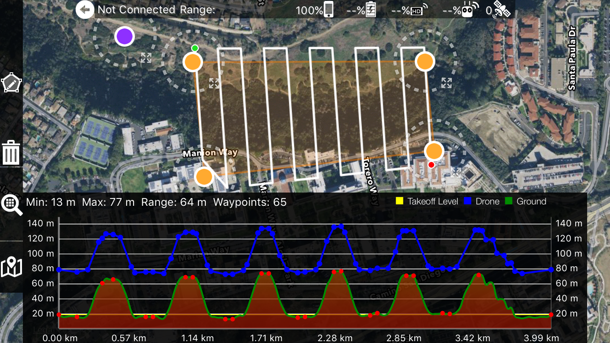

Software
I design and ship production-grade iOS and Android apps, with a focus on stability, rapid incident response, and field validation. I built and maintained Map Pilot on both platforms, delivering new capabilities while keeping DJI and Autel SDKs current. I also extended Change Aerial’s mission-planning tools in Python.

Terrain-aware missions shown in Map Pilot.
Change Aerial
Software engineer and Drone specialist for Change Aerial's Repeat Image inspection for utlity infrastructure.
Flight Planning
- Scripts that ingest Repeat Station Image data and generate safe routes.
- Obstacle avoidance routines for safe transit near utility infrastructure.
- Exports directly into the DJI's KMZ ecosystem.
Training
- Helped organize initial datasets for training.
- Filtered image meta data for temporal RNN models
Map Pilot – iOS & Android
Lead developer of Map Pilot Pro, the companion app for Maps Made Easy that ensure accurate and high quality data aggregation for photogrammetry.
iOS & Android
- Release on both iOS and Android, keeping SDKs current and stable.
- Respond to user feedback, fix crashes, and triage telemetry reports.
Terrain Aware
- Terrain Aware mission planning that adjusts altitude against SRTM datasets.
Virtual Control
- Built “virtual flights” where Map Pilot pilots the drone in software before takeoff.
Need help with mission software?
I can extend Map Pilot, build custom utilities, or create Python tooling that feeds your mission planners. Send me the airframes, SDKs, and datasets you need to support.